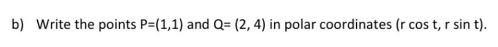
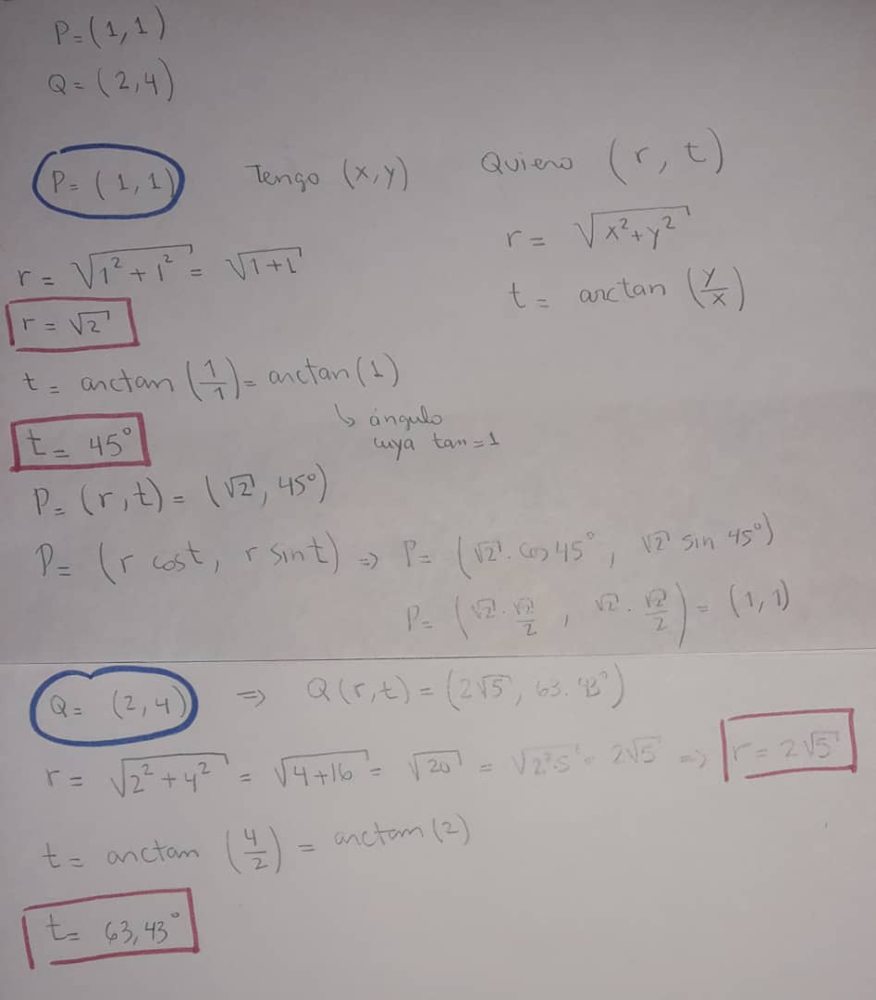

Indice
Pregunta 2

Respuesta 2

Pistas
Las coordenadas polares (r,t) representan la distancia desde el origen (r) y el ángulo positivo (t) desde el eje de las x
- r es igual a la raiz cuadrada de 'x' al cuadrado más 'y' al cuadrado
- t es el angulo resultante de hallar la arctan de y/x
Ayuda para validar si está bien:
Calculadora de coordenadas cartesianas a coordenadas polares
Indice